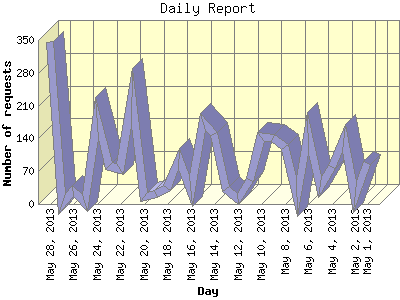

The Daily Report identifies the activity for each day within the reporting period. Remember that one page hit can result in several server requests as the images for each page are loaded.

| Day | Number of requests | Number of page requests | |
|---|---|---|---|
| 1. | May 1, 2013 | 88 | 28 |
| 2. | May 2, 2013 | 16 | 5 |
| 3. | May 3, 2013 | 141 | 35 |
| 4. | May 4, 2013 | 79 | 25 |
| 5. | May 5, 2013 | 36 | 22 |
| 6. | May 6, 2013 | 152 | 49 |
| 7. | May 7, 2013 | 16 | 4 |
| 8. | May 8, 2013 | 122 | 37 |
| 9. | May 9, 2013 | 141 | 37 |
| 10. | May 10, 2013 | 144 | 54 |
| 11. | May 11, 2013 | 52 | 18 |
| 12. | May 12, 2013 | 10 | 8 |
| 13. | May 13, 2013 | 32 | 12 |
| 14. | May 14, 2013 | 150 | 44 |
| 15. | May 15, 2013 | 174 | 36 |
| 16. | May 16, 2013 | 28 | 10 |
| 17. | May 17, 2013 | 97 | 30 |
| 18. | May 18, 2013 | 34 | 22 |
| 19. | May 19, 2013 | 21 | 9 |
| 20. | May 20, 2013 | 16 | 6 |
| 21. | May 21, 2013 | 228 | 82 |
| 22. | May 22, 2013 | 74 | 28 |
| 23. | May 23, 2013 | 81 | 29 |
| 24. | May 24, 2013 | 183 | 33 |
| 25. | May 25, 2013 | 2 | 2 |
| 26. | May 26, 2013 | 28 | 7 |
| 27. | May 27, 2013 | 0 | 0 |
| 28. | May 28, 2013 | 345 | 58 |
Most active day May 21, 2013 : 82 pages sent. 345 requests handled.
Daily average: 27 pages sent. 92 requests handled.
This report was generated on May 31, 2013 06:52.
Report time frame May 1, 2013 01:02 to May 28, 2013 23:18.
| Web statistics report produced by: analog 6.0 / Report Magic 2.21 |